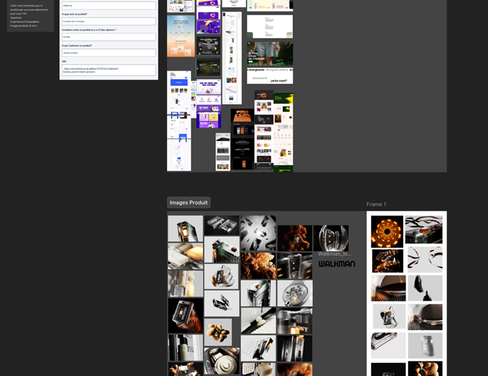
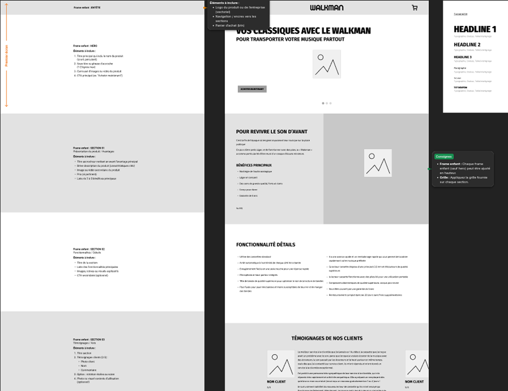
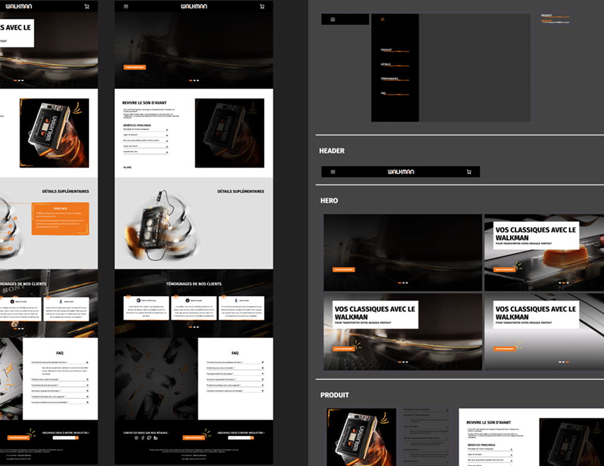
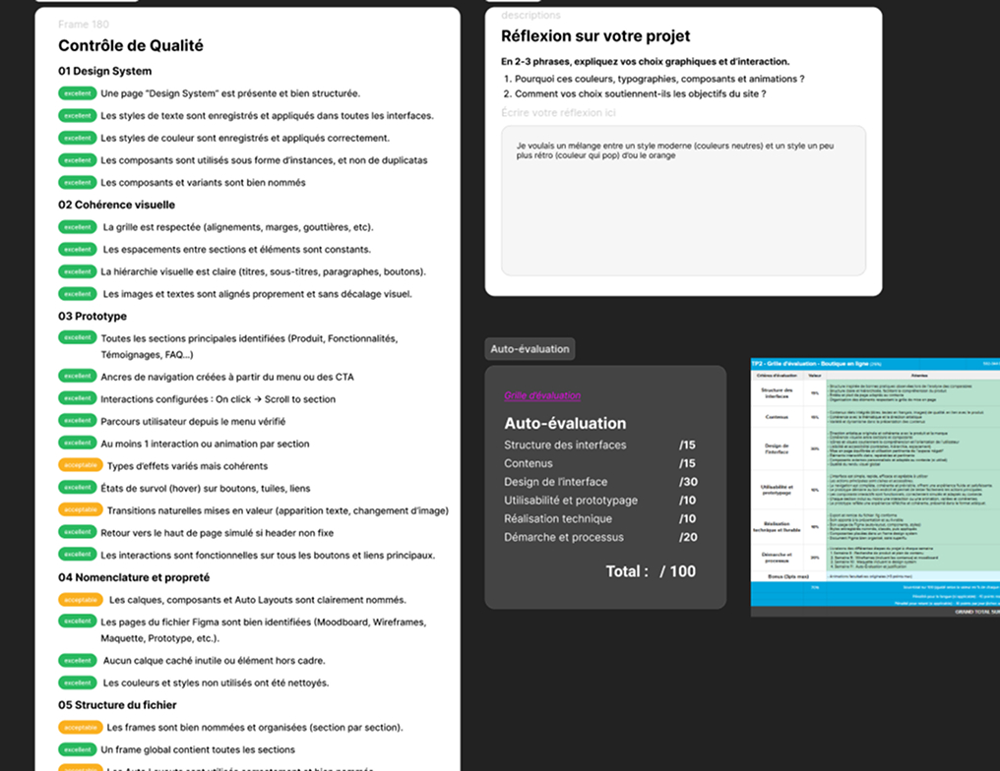
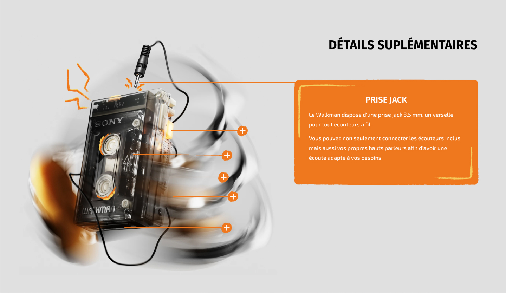
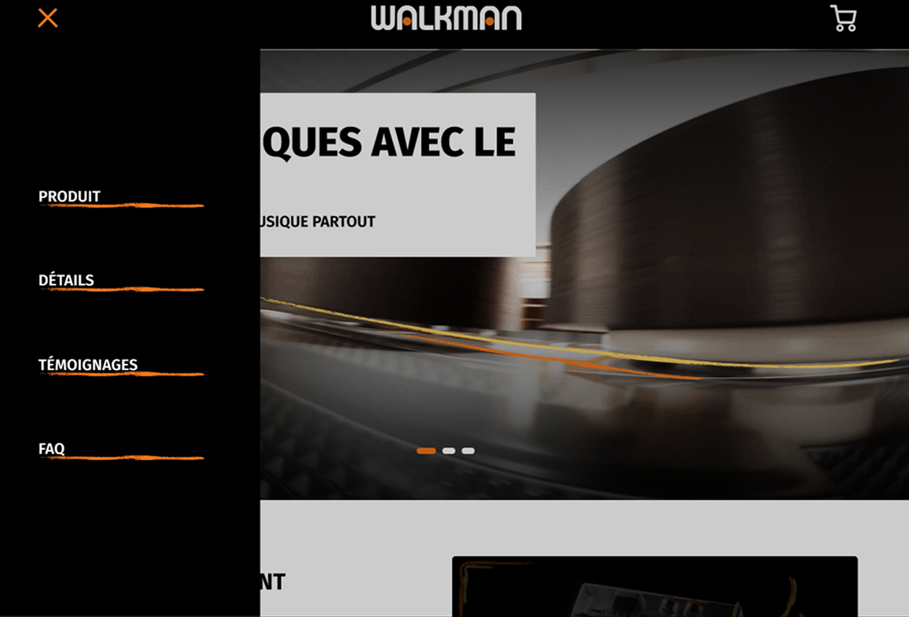

Ce projet a été concus dans le cadre de mon cours de design. Le but était de créer le design d'un site web sur une page en utilisant Figma, concernant un produit fictif pris sur Behance tout en intégrant différentes interactions.
J'ai moi-même conçu le design complet du site de même que son interactivité. Le produit fictif a été créé par Tektura studio.
Aucune intelligence artificielle n’a été utilisée pour ce projet.

1.
La première étape de ce projet a été de trouver le produit sur lequel je souhaitais faire la page pour ensuite créer une planche d'inpiration et trouver des comparables.
2.
Par la suite, il a fallu créer le wireframe de la page selon les consignes.
3.
Le design a permis de construire l'identité de la page, en ajoutant des éléments de design tels que des traits et des images.
4.
Le prototypage a permis à mon projet de devenir plus concret, nous permettant ainsi d'observer ce à quoi les interactions peuvent ressembler dans un contexte réel.
5.
En effectuant un contrôle de qualité, j'ai pu m'assurer de répondre à tous les objectifs, tout en m'assurant d'avoir un design atrayant.









J'ai pu apprendre à produire un style un peu plus "vintage" et d'explorer l'intégration de traits dans un site. Cela m'a également permis d'explorer l'intégration de prototype dans Figma.